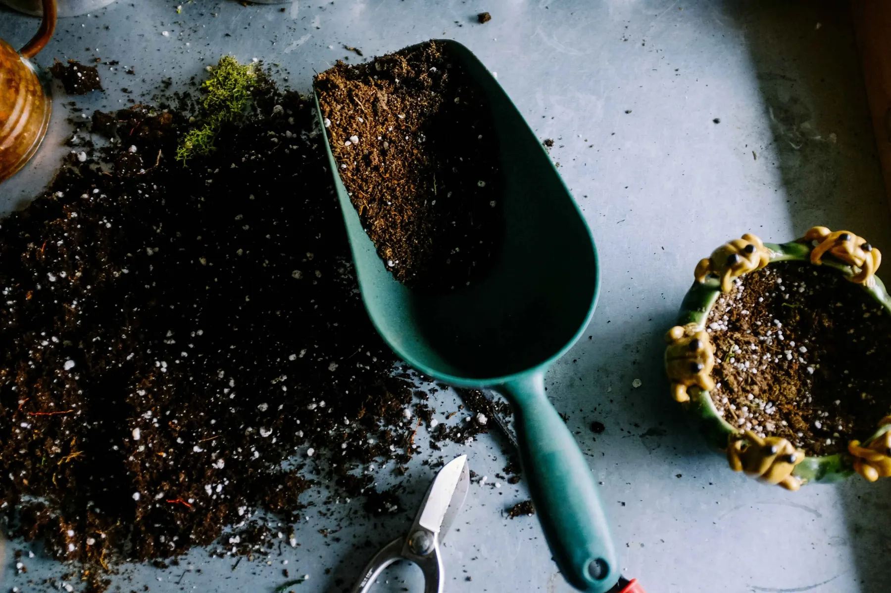
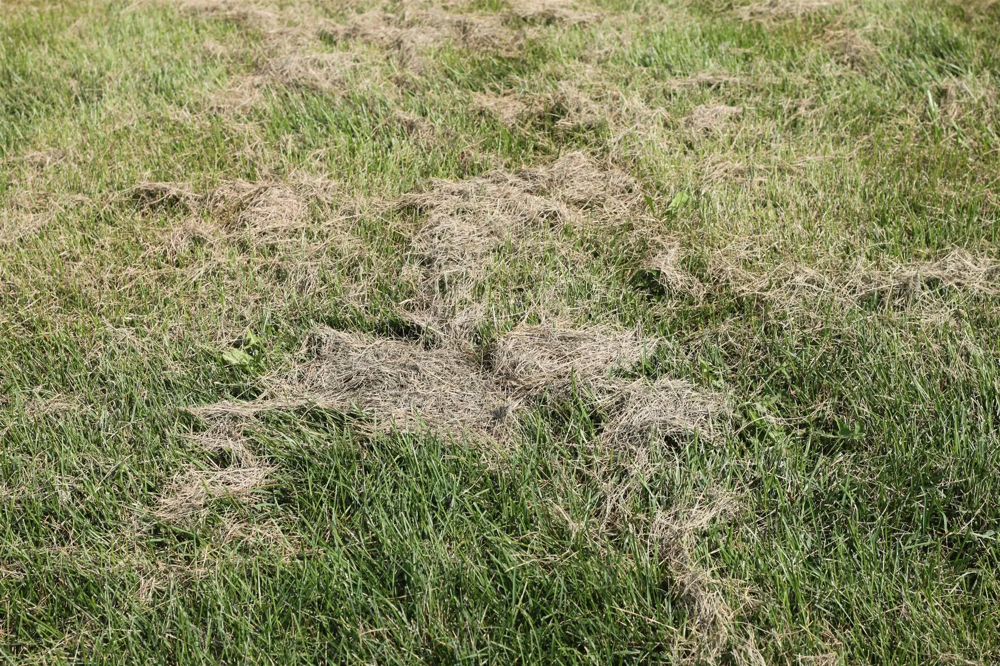

A Quote After a Site Visit
We walk the lot with you before pricing anything, and the quote carries no obligation to book.

At Big Easy Lawn Care, we provide lawn service in Metairie for homes and businesses, from routine mowing and edging to cleanups, landscaping, and outdoor living builds. We plan each visit around closely spaced suburban lots, decades-old plantings, and the soggy ground a heavy Gulf rain can leave behind.
A lawn service visit in Metairie starts with a free consultation and a no-obligation quote, and then the work itself is done by a fully insured lawn professional and backed by our satisfaction guarantee. Homeowners and commercial properties can book one visit or a standing program, and every account is handled online.
We walk the lot with you before pricing anything, and the quote carries no obligation to book.
The person mowing your Metairie yard is a fully insured lawn professional, which protects you and your property.
Book a one-time mow and weed-eat after a busy month, or set up ongoing maintenance with regular yard cleanups.
We look after residential lawns and business properties alike, from a corner lot to the grounds around an office.
Check upcoming visits, pay your invoice, and order extra service from any phone or web browser.
Our satisfaction guarantee means that if a missed edge or a skipped bed leaves you unhappy, we will make it right.
Metairie homeowners book a lawn service because warm-season grass keeps growing through a long, wet season while work and family fill the week. Low spots stay soggy after storms, mature trees drop leaves into beds, and every driveway and fence line needs edging each time the grass is cut.
In Metairie, we do three kinds of lawn and landscaping work: lawn and yard maintenance, such as mowing, trimming, weed cutting, and hauling; landscaping, including new installs, restoration, and drainage work; and outdoor living projects like pergolas and decks. Any of them can begin with a free on-site estimate.

Routine mowing, edging, and cleanup that keeps a Metairie lawn neat through the growing season.

Bed installs, restoration, and drainage fixes for yards that have outgrown simple upkeep.
Explore Landscaping
Pergolas, decks, and outdoor kitchens that turn a backyard into usable, shaded space.
Explore Outdoor LivingSoggy spots and mushrooms say your Metairie lawn has a problem below the grass blades. Water that sits in the same low spots for days after a storm, turf that feels spongy underfoot, and mushroom rings that keep coming back are each easier to correct before summer heat adds stress.
Low areas that stay wet long after rain leave roots short of air. We look at grading and drainage before treating the grass itself.
A soft, springy lawn often means thatch has built up. LSU AgCenter notes St. Augustine thatch may need vertical mowing in late spring to summer.
LSU AgCenter ties mushroom rings to wet, humid weather and heavy thatch. Raking the caps helps, while aeration and deeper, less frequent watering address the cause.
Lawn care in Metairie differs because most yards surround detached homes built decades ago, set close together on the south shore of Lake Pontchartrain. Older plantings, tight lot lines, and ground that has been slowly settling mean a crew has to read drainage and shade as closely as grass height.

Yes, because a local lawn service near Metairie means your yard is cared for by a locally owned company whose office sits on Magazine Street in New Orleans. You get a free on-site consultation, an insured professional on each visit, a satisfaction guarantee, and online scheduling that adapts when storms change the week.
We are a locally owned business based at 3436 Magazine Street, Suite 414-I, in New Orleans.
We price the work after a free look at the property, so the quote matches the yard in front of us.
Insured professionals handle every job, and our satisfaction guarantee backs the finished result.
Reserve an extra visit after a storm from your online account, and pay for it there too.
After you request lawn service in Metairie, three stages follow: a free consultation on the property that ends with a no-obligation quote, the scheduled work carried out by a fully insured lawn professional, and ongoing account management online, where you can pay, view visits, and request more service whenever the yard needs it.
We note the grass, the shade, any wet spots, the beds, and gate access, then send a written quote.
Your insured lawn professional mows, trims, and cleans up exactly what the quote covers.
Manage visits and payments online, and book extra help when rain or travel gets in the way.

Before lawn service starts, Metairie homeowners should answer three questions: how often they want visits, which problems matter beyond mowing, and what a crew needs to know to reach the yard. Settling those points first gives you a quote that fits the property and a first visit without surprises.
We generally recommend weekly or bi-weekly service during peak growing seasons, though a single cleanup is always an option.
Point out wet corners, bare patches, or tired beds, since they may call for drainage work or new landscape building.
Let us know about locked gates, dogs, narrow side yards, and whether a trailer can park out front.
Yes. Beyond Metairie, we offer the full range of lawn maintenance, weed cutting, and landscaping, and the same team covers the neighboring cities. Our service area includes New Orleans, Kenner, Harahan, River Ridge, and Gretna, plus Covington, Mandeville, Madisonville, and Abita Springs across the lake.
Metairie is Jefferson Parish's largest community, set on the south shore of Lake Pontchartrain between New Orleans and Kenner. The Census Bureau counts it as a census designated place, an unincorporated community with no city government of its own.
Free time in Metairie centers on its big park, its lakefront, and its shopping streets. These are some of the local favorites highlighted by Visit Jefferson Parish.
Metairie sits near the middle of our service area, so its neighbors are close at hand. We also serve these cities, four of them across the lake on the Northshore.
The name Metairie comes from a French term for a small tenant farm that paid its landlord with a share of the crop. Here are a few more things worth knowing about the community.
Jefferson Parish Transit, formerly known as JeT, runs the buses that serve Metairie. Several of its East Bank routes cross the community and connect with New Orleans service.
The lawn care questions that come up most in Metairie are about when to fertilize, aerate, and dethatch, how to handle mushrooms, fire ants, and weeds, and whether a thin lawn can be overseeded. One more is about the community itself. Our answers draw on LSU AgCenter guidance for south Louisiana lawns.
In south Louisiana, LSU AgCenter says fertilizing warm-season lawns should begin in mid-April, once the grass is actively growing, because feeding earlier can encourage weeds and large patch disease. For St. Augustine in Metairie, LSU suggests a second feeding in June, and a soil test first shows what the yard actually needs.
Aerate while the grass is actively growing so it recovers quickly. LSU AgCenter calls spring a good time and suggests aerating once per growing season or as compaction requires. Use a hollow-tine machine that pulls cores, because solid tines do little for compacted Metairie soil and can make a hardpan worse.
Mushrooms are the fruiting bodies of fungi living in the soil, and LSU AgCenter notes that wet, humid weather favors them, which is why they appear after a rainy Metairie week. The fungi behind fairy rings also thrive in heavy thatch. Rake the caps away, then aerate and water deeply but less often.
Dethatch a warm-season lawn in late spring or early summer, while it is growing fast enough to recover; LSU AgCenter says St. Augustine thatch may need to be reduced by vertical mowing during that window. Excess thatch makes turf spongy, binds nutrients, and harbors pests, so a Metairie lawn that feels soft underfoot is worth checking.
For fire ants, LSU AgCenter recommends a two-step approach: broadcast a bait across the yard with a seed spreader when temperatures run between 75 and 95 degrees, then spray mounds as they appear. Skip treatment when rain is coming or the soil is saturated, which is common in Metairie, and repeat the program in fall.
If your Metairie lawn is St. Augustine, it cannot be overseeded, because LSU AgCenter notes that no commercial seed for this grass is available in Louisiana. Thin areas are repaired with sod or with plugs planted about a foot apart, after fixing whatever caused the thinning, such as shade or standing water.
To get rid of weeds in a south Louisiana lawn, start early: LSU AgCenter advises applying a preemergence herbicide in late January or early February, before soil temperatures stay at 55 degrees for several days in a row, and following the label exactly. Because winter weather varies, LSU also suggests watching local conditions to time it in Metairie.
Metairie is in Jefferson Parish, where it is the largest community. It sits on the south shore of Lake Pontchartrain between New Orleans and Kenner, and as a census designated place it has no city government of its own. We provide lawn care across Metairie and the rest of our service area.
Join our satisfied and happy customers. Get your free lawn care assessment today.